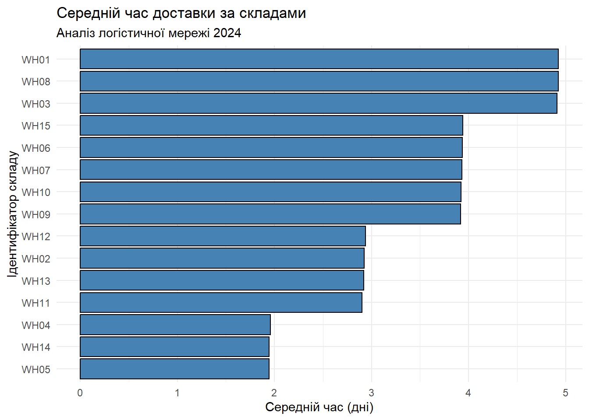

library(data.table)
library(ggplot2)
# --- ГЕНЕРАЦІЯ ВЕЛИКИХ ТЕСТОВИХ ДАНИХ (600 000 рядків) ---
cat("=== ПІДГОТОВКА СЕРЕДОВИЩА ТА ГЕНЕРАЦІЯ ДАНИХ ===\n\n")=== ПІДГОТОВКА СЕРЕДОВИЩА ТА ГЕНЕРАЦІЯ ДАНИХ ===dir.create("data", showWarnings = FALSE)
# 1. Генерація довідника складів
set.seed(42)
wh_data <- data.table(
warehouse_id = paste0("WH", sprintf("%02d", 1:15)),
city = sample(c("Київ", "Львів", "Одеса", "Дніпро", "Харків"), 15, replace = TRUE),
warehouse_type = sample(c("automated", "semi-automated", "manual"), 15, replace = TRUE),
capacity_pallets = sample(5000:20000, 15, replace = TRUE)
)
fwrite(wh_data, "data/warehouses.csv")
# 2. Генерація логістичних даних (600 000 записів)
n_rows <- 600000
dispatch_dates <- as.IDate("2024-01-01") + sample(0:364, n_rows, replace = TRUE)
# Додаємо "штрафні дні" для кожного складу, щоб графік був реалістичним і різним
warehouse_penalties <- sample(0:3, 15, replace = TRUE)
names(warehouse_penalties) <- wh_data$warehouse_id
# Базові затримки
base_delays <- sample(-1:10, n_rows, replace = TRUE,
prob = c(0.01, 0.15, 0.3, 0.25, 0.15, 0.08, 0.03, 0.01, 0.01, 0.005, 0.003, 0.002))
# Призначаємо склади
assigned_warehouses <- sample(wh_data$warehouse_id, n_rows, replace = TRUE)
logistics_data <- data.table(
delivery_id = 100000 + 1:n_rows,
warehouse_id = assigned_warehouses,
customer_id = paste0("CUST-", sample(1000:9999, n_rows, replace = TRUE)),
dispatch_date = dispatch_dates,
# Додаємо базову затримку + індивідуальний штраф складу
delivery_date = dispatch_dates + base_delays + warehouse_penalties[assigned_warehouses],
distance_km = sample(50:1500, n_rows, replace = TRUE)
)
fwrite(logistics_data, "data/logistics_2024.csv")
cat("Дані успішно згенеровані та записані на диск.\n")Дані успішно згенеровані та записані на диск.cat("\n\n=== ЕТАП 1. Швидке завантаження даних (fread) ===\n\n")
=== ЕТАП 1. Швидке завантаження даних (fread) ===# Завантаження даних через оптимізовану функцію fread
t_load <- system.time({
logistics <- fread("data/logistics_2024.csv")
warehouses <- fread("data/warehouses.csv")
})
cat("Час завантаження >600k рядків (секунд):\n")Час завантаження >600k рядків (секунд):print(t_load["elapsed"])elapsed
0.19 cat("\nПеревірка класів об'єктів:\n")
Перевірка класів об'єктів:class(logistics)[1] "data.table" "data.frame"cat("\n\n=== ЕТАП 2. Підготовка даних (Update by reference) ===\n\n")
=== ЕТАП 2. Підготовка даних (Update by reference) ===# Обчислення часу доставки на місці (без копіювання таблиці)
logistics[, delivery_time := as.integer(as.IDate(delivery_date) - as.IDate(dispatch_date))]
# Заміна аномальних (від'ємних) значень на NA на місці
logistics[delivery_time < 0, delivery_time := NA_integer_]
# Видалення стовпця customer_id на місці.
# Примітка: delivery_id залишаємо, оскільки він потрібен для розрахунків у Етапі 4.
logistics[, c("customer_id") := NULL]
cat("Структура логістичних даних після підготовки:\n")Структура логістичних даних після підготовки:str(logistics)Classes 'data.table' and 'data.frame': 600000 obs. of 6 variables:
$ delivery_id : num 1e+05 1e+05 1e+05 1e+05 1e+05 ...
$ warehouse_id : chr "WH14" "WH06" "WH11" "WH03" ...
$ dispatch_date: IDate, format: "2024-12-20" "2024-08-02" ...
$ delivery_date: IDate, format: "2024-12-28" "2024-08-06" ...
$ distance_km : int 873 64 303 726 1182 1249 331 339 1417 82 ...
$ delivery_time: int 8 4 2 5 5 3 6 3 4 6 ...
- attr(*, ".internal.selfref")=<externalptr> cat("\n\n=== ЕТАП 3. Агрегація за складами ===\n\n")
=== ЕТАП 3. Агрегація за складами ===# Об'єднання таблиць (Inner Join) через аргумент 'on'
merged_dt <- logistics[warehouses, on = "warehouse_id", nomatch = 0]
# Агрегація продуктивності складів
wh_performance <- merged_dt[, .(
mean_delivery_time = mean(delivery_time, na.rm = TRUE),
total_deliveries = .N,
late_delivery_prop = mean(delivery_time > 5, na.rm = TRUE)
), by = warehouse_id]
# Сортування за спаданням середнього часу доставки через keyby/order
wh_performance <- wh_performance[order(-mean_delivery_time)]
cat("Показники ефективності складів:\n")Показники ефективності складів:print(head(wh_performance)) warehouse_id mean_delivery_time total_deliveries late_delivery_prop
<char> <num> <int> <num>
1: WH01 4.926830 40208 0.2894449
2: WH08 4.924908 40031 0.2872774
3: WH03 4.912624 40034 0.2881301
4: WH15 3.938993 40028 0.1417008
5: WH06 3.936106 40129 0.1427895
6: WH07 3.933579 39897 0.1414392cat("\n\n=== ЕТАП 4. Аналіз за місяцями та типами складів (.SD) ===\n\n")
=== ЕТАП 4. Аналіз за місяцями та типами складів (.SD) ===# Створення стовпця з місяцем на місці
merged_dt[, month := format(as.IDate(dispatch_date), "%Y-%m")]
# Підрахунок кількості доставок із використанням .SD та .SDcols
monthly_analysis <- merged_dt[, lapply(.SD, length), by = .(warehouse_type, month), .SDcols = "delivery_id"]
# Перейменовуємо результат для зрозумілості
setnames(monthly_analysis, "delivery_id", "deliveries_count")
monthly_analysis <- monthly_analysis[order(month, warehouse_type)]
cat("Місячна активність за типами складів (перші 10 записів):\n")Місячна активність за типами складів (перші 10 записів):print(head(monthly_analysis, 10)) warehouse_type month deliveries_count
<char> <char> <int>
1: automated 2024-01 20158
2: manual 2024-01 16866
3: semi-automated 2024-01 13449
4: automated 2024-02 19414
5: manual 2024-02 15760
6: semi-automated 2024-02 12750
7: automated 2024-03 20357
8: manual 2024-03 17118
9: semi-automated 2024-03 13736
10: automated 2024-04 19859cat("\n\n=== ЕТАП 5. Топ найменш ефективних складів ===\n\n")
=== ЕТАП 5. Топ найменш ефективних складів ===# Фільтрація неефективних складів: середній час > 4 днів та > 1000 доставок
bad_warehouses <- wh_performance[mean_delivery_time > 4 & total_deliveries >= 1000]
# Злиття з довідником для отримання назви міста
worst_hubs <- bad_warehouses[warehouses, on = "warehouse_id", nomatch = NULL][
, .(warehouse_id, city, warehouse_type, mean_delivery_time, total_deliveries)
]
# Сортуємо від найгіршого до кращого і беремо топ-10 (або скільки є)
worst_hubs <- head(worst_hubs[order(-mean_delivery_time)], 10)
cat("Найменш ефективні вузли логістики:\n")Найменш ефективні вузли логістики:print(worst_hubs) warehouse_id city warehouse_type mean_delivery_time total_deliveries
<char> <char> <char> <num> <int>
1: WH01 Київ manual 4.926830 40208
2: WH08 Львів automated 4.924908 40031
3: WH03 Київ automated 4.912624 40034cat("\n\n=== ЕТАП 6. Візуалізація результатів ===\n\n")
=== ЕТАП 6. Візуалізація результатів ===# Перетворення data.table в data.frame для сумісності з ggplot2
wh_performance_df <- setDF(copy(wh_performance))
# Побудова графіка
p <- ggplot(wh_performance_df, aes(x = reorder(warehouse_id, mean_delivery_time), y = mean_delivery_time)) +
geom_bar(stat = "identity", fill = "steelblue", color = "black") +
coord_flip() +
labs(
title = "Середній час доставки за складами",
subtitle = "Аналіз логістичної мережі 2024",
x = "Ідентифікатор складу",
y = "Середній час (дні)"
) +
theme_minimal()
print(p)